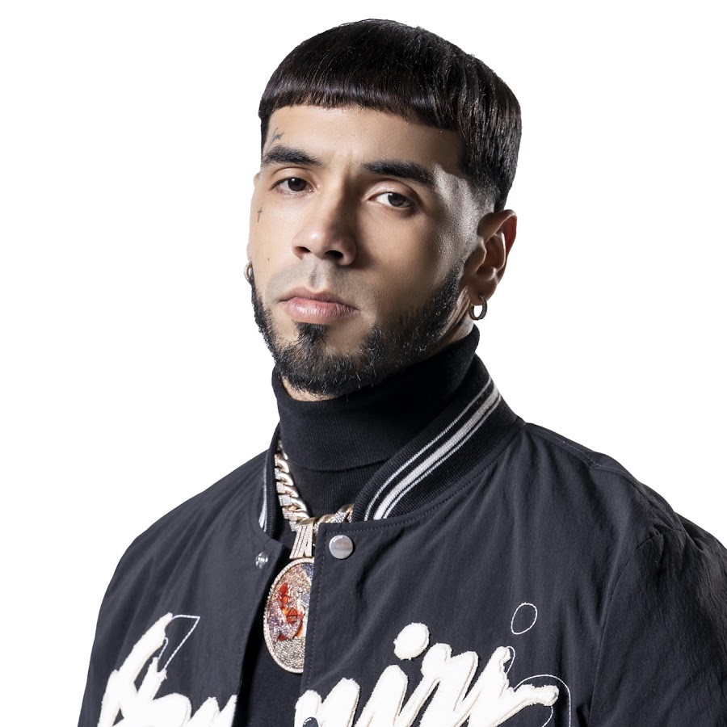

¿QUIÉN ES ANUEL AA?
Emmanuel Gazmey Santiago (Carolina, 26 de noviembre de 1992) más conocido por su nombre artístico Anuel AA, es un cantante y compositor puertorriqueño de reggaeton y trap latino.
Fue uno de los artistas pioneros en el movimiento del trap latino durante los años 2015 y 2016 junto a Bryant Myers, Anonimus y Almighty. Era una de las cabezas del género hasta que, en abril de 2016, cayó arrestado por posesión ilegal de armas de fuego. Su carrera musical, lejos de acabarse, siguió creciendo gracias al movimiento que generaron el resto de artistas del género urbano para apoyarlo, el movimiento "FREE ANUEL"
MAYORES PREMIOS GANADOS CON SUS ÁLBUMES
| ÁLBUM | AÑO DE LANZAMIENTO | PREMIOS |
|---|---|---|
| REAL HASTA LA MUERTE | 2018 | 6X Platino + #1 Top Latin Album Billboard |
| EMMANUEL | 2020 | 8X Platino + 1X Oro + #1 Top Latin Album Billboard |
| LAS LEYENDAS NUNCA MUEREN | 2021 | #1 Top Latin Album Billboard |
| LLNM2 | 2022 | #2 Top Latin Album Billboard |
GRANDES ARTISTAS CON LOS QUE HA COLABORADO
- Bad Bunny
- Ozuna
- Daddy Yankee
- Bryant Myers
- J Balvin
- Farruko
- Myke Towers
- Jhay Cortez
- Ñengo Flow
SUS MAYORES ENEMIGOS
- Feid
- Cosculluela
- Arcangel
- Farruko/li>